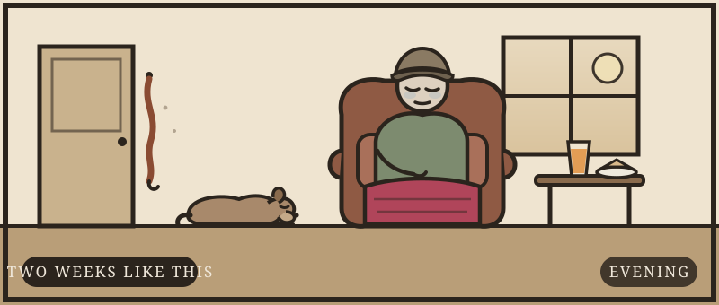

The referral said dehydration
A two-line GP letter, an old man off his legs, and a set of admission bloods the letter never mentioned. Work him up properly — the label is not the diagnosis.
“74M, off his legs, drinking poorly. Dehydration / ?UTI. Please assess.” Ronald sits very upright on the trolley — polite, grey, dry-lipped, answering slowly because he is tired rather than confused. His wife Jean has the bag of medication boxes on her lap. The admission bloods are back before you reach the bay: his kidneys are the problem.
- 1Three days, each locked when it ends. Every morning opens with a brief of what has happened so far; each day runs examine → investigate → write the plan, and the next morning's numbers answer for what you wrote.
- 2Bedside tests are a tap; everything else you type like a real order. Nothing is reported for you — ECGs, films, gases and sounds arrive raw, and you commit a read. You find out at the end whether you were right.
- 3Name the diagnosis whenever you can prove it — which day matters. And if a night goes wrong, it starts the way it really does: a bleep, a grey patient, and A to E.
Tap to ask. Each question costs about 30 seconds.

The core systems are quick. Reach for a focused examination when the story calls for it — choosing the right one is the skill.
Further / focused examinations ▾
Bedside tests are a tap. Everything else, order it the way you would at a terminal — type it. Rounds still jump the clock by the slowest test; the myeloma labs run overnight.
Commit your diagnosis
No list to pick from. Name it the way you'd write it in the notes.
Now manage the kidney
You've made the diagnosis. This is what separates safe from dangerous — the decisions, with the evidence behind each.
- “Dehydration / ?UTI” was a referral label, not a finding — and the dryness was real, which is what made it a good decoy. Correcting the volume was right; letting the label close the differential was the error the whole case was built around.
- Two tests came back clean and both were lying politely. The dipstick detects albumin — free light chains are invisible to it. SPEP misses light-chain-only disease, which is 15–20% of myeloma. The screen for an unexplained AKI is serum free light chains plus urine electrophoresis.
- Three findings had each been explained away: anaemia “monitored” since April, a calcium that melted with fluids, back pain called wear-and-tear on X-ray. Each explanation held on its own. Only one disease explained all three at once.
- Staging needs a baseline, and the baseline lived in a GP filing system 40 minutes away by phone. Creatinine 268 means nothing until 82 sits next to it — then it's stage 3 and the night changes gear.
- Insulin–dextrose shifts potassium; it removes none. In an oliguric patient the K⁺ rebounds as the shift wears off — a falling potassium after treatment is a loan, not a payment. Plan the removal before the rebound arrives.
- A patient failing transfer criteria — potassium, ECG, pH, bicarbonate, pressure — is not made safer by an ambulance. Critical care in your own hospital first; the motorway after he's stable.
- A normal ALP and bland skeletal films are entirely compatible with myeloma — lytic disease without a blastic response. Normal imaging of bone excludes less than it appears to.